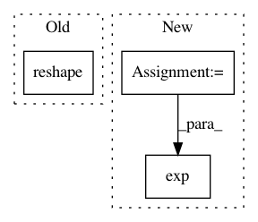

fa786e5f2a8016725991cf2d02eebe6368dc04b3,dipy/reconst/dti.py,,wls_fit_tensor,#Any#Any#,1154
Before Change
tol = 1e-6
data = np.asarray(data)
data_flat = data.reshape((-1, data.shape[-1]))
dti_params = np.empty((len(data_flat), 4, 3))
//obtain OLS fitting matrix
//U,S,V = np.linalg.svd(design_matrix, False)
After Change
//ols_fit = np.dot(U, U.T)
ols_fit = _ols_fit_matrix(design_matrix)
log_s = np.log(data)
w = np.exp(np.einsum("...ij,...j", ols_fit, log_s))
evals, evecs = decompose_tensor(
from_lower_triangular(
np.einsum("...ij,...j",
pinv_vec(design_matrix * w[..., None]),
In pattern: SUPERPATTERN
Frequency: 3
Non-data size: 3
Instances
Project Name: nipy/dipy
Commit Name: fa786e5f2a8016725991cf2d02eebe6368dc04b3
Time: 2015-10-15
Author: dimrozakis@gmail.com
File Name: dipy/reconst/dti.py
Class Name:
Method Name: wls_fit_tensor
Project Name: GPflow/GPflow
Commit Name: 122f4ae6f400f0c43f3fc6a85481264809e678f5
Time: 2016-05-27
Author: james.hensman@gmail.com
File Name: GPflow/kernels.py
Class Name: PeriodicKernel
Method Name: K
Project Name: reinforceio/tensorforce
Commit Name: ccbe291ec9859698a57147b1033d503a7739dfa9
Time: 2017-08-03
Author: aok25@cl.cam.ac.uk
File Name: tensorforce/core/distributions/gaussian.py
Class Name: Gaussian
Method Name: create_tf_operations